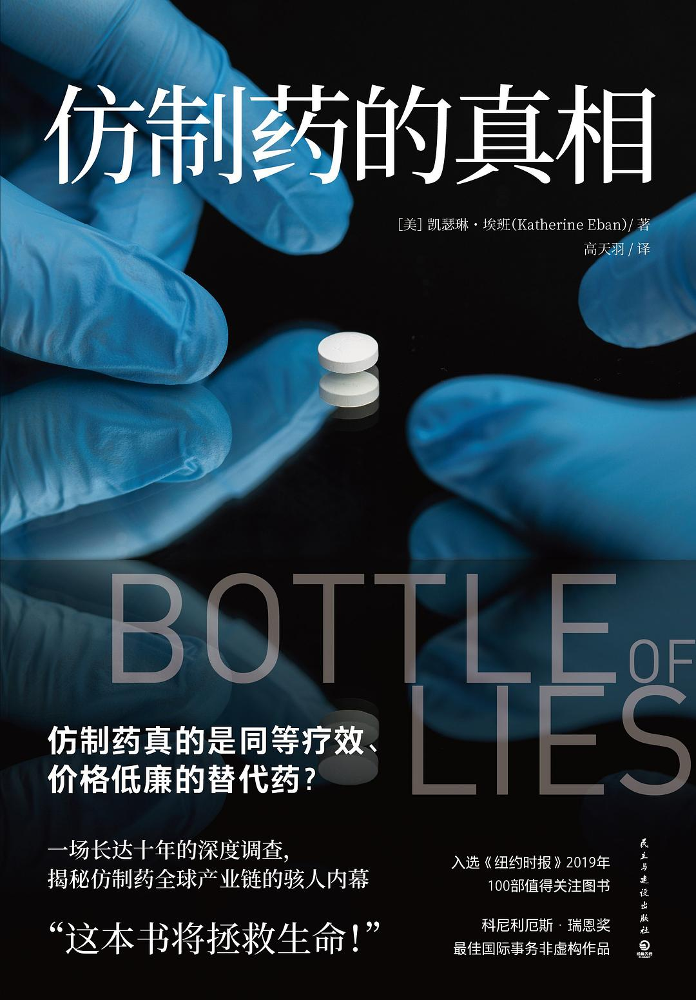

|  |
仿制药的真相 |
前言
本书源于我无法解答的一个困惑。
2008年春天，国家公共广播电台《人民药房》（The People’s Pharmacy）节目的主持人乔·格莱登（Joe Graedon）联系了我。我在报道制药业的10年里，曾多次到他的节目做客。但这一次，他是来求我帮忙的。他说不断有患者给他的节目打电话或写信，对仿制药提出强烈的投诉，他们说这些药要么没用，要么会引起极严重的不良反应。这些药物由不同的厂家生产，治疗从抑郁症到心脏病的各种疾病，共同之处在于它们都是仿制药，也就是在品牌药的专利过期之后，合法仿制出来的廉价版本。
格莱登将这些患者的投诉信转发给了美国食品药品管理局（U.S. Food and Drug Administration，缩写FDA，以下简称为美国药监局）的高层官员。但那些官员坚称仿制药和品牌药的效果完全相同，患者的反应太主观了。在格莱登看来，他们更像是在辩解，没有拿出实事求是的科学态度。在美国，仿制药在平衡预算方面功不可没。如果没有它们，任何一个大规模的政府卫生项目，比如平价医疗法案、联邦医疗保险处方药计划、退伍军人健康管理局以及各种援助非洲和发展中国家的慈善项目，都将变得难以负担。格莱登本人一直在提倡扩大仿制药的适用范围，但是这些投诉不容忽视，而且性质都相似。他感觉这些药物出现了什么重大问题，但他也不知道问题是什么。他希望找一个拥有调研实力的人去查一查那些患者的投诉。
多年来，我一直在对药物和公共卫生问题进行调查报道。我曾揭露过品牌制药公司的不良行径，比如生产阿片类药物的厂家为了增加销量而隐瞒成瘾的风险。在我的第一本书《危险剂量》（Dangerous Doses）中，我揭露了在隐蔽的灰市上，药物批发商们如何对我们的药物一再转售，以此隐藏药物的源头，为假药制造者敞开了方便之门。说起仿制药，我只知道它们在我们的药物供应中占比超过六成（现在已占到九成），对价格不断上涨的品牌药起到了必不可少的平衡作用。
我还在撰写那篇文章时，就已经认识到了这些审查的局限性。证明患者受到了危害或许能说明那些药物有问题，但那到底是什么问题呢？还有，即使我能证明那些药真有问题，又是什么原因造成的？这些问题的答案十有八九要到实验室、生产工厂和制药公司的会议室里去找，而其中许多都在海外运营。我们的仿制药，有大约40%在印度生产。无论是品牌药还是仿制药，我们所有的药物中足有80%的有效成分是在印度等国生产的。正如一个药品原料进口商告诉我的那样：“没有了这些海外产品，我们一种药都做不出来。”
那些优质仿制药带来的好处是谁也无法否认的。当仿制药具有理想的疗效（许多仿制药也确实如此），结果就如同奇迹。曾在无国界医生组织担任基本药物推广运动美国区主任的艾米·麦克莱恩（Emi MacLean）指出：“印度和其他国家生产的仿制药成本只有专利药的一个零头，这拯救了发展中国家数百万人的生命。”这种价格的落差也使几百万美国人买得起药，看得起病，由于美国对品牌药缺乏有效的价格管制，他们除了选择仿制药别无他法。
序
彼得·贝克（Peter Baker）是美国药监局的一名药物调查员，他从孟买出发向东行200英里，先是经过一条挤满卡车的高速公路，再经过一条有奶牛漫步的小路，才到达他的任务地点。他的目的地位于一道金属栅栏后面，那里有一片巨大的生物科技园区，经营它的是印度仿制药公司沃克哈特有限公司。在那几十座建筑中间，贝克的工作是检查一个专门的工厂区域——H-14/2地块，以确保它能安全地生产一种无菌注射剂，供美国的癌症患者使用。
虽然“沃克哈特”这个名字很少有美国人知道，但许多人都用过它的药。这家公司为美国市场生产大约110种不同的仿制药物，包括一种治疗高血压的β受体阻滞剂——琥珀酸美托洛尔（metoprolol succinate）。在使用这种药物的仿制版的美国患者中，有大约四分之一用的是沃克哈特的产品。奥兰加巴德的这家药厂生产的是无菌注射剂，因此它必须遵守特别严格的规章。
沃克哈特还有一项更大的优势：早在几周之前，公司的高管们就知道贝克要来视察工厂了。在美国，美国药监局的调查员可以不打招呼就到工厂视察，需要待多久就待多久。然而海外视察不同，因为申请签证和联系进入厂区都要经过复杂的环节，美国药监局采取了另一种做法：提前宣布。根据常规程序，沃克哈特公司先“邀请”美国药监局前去视察，美国药监局再接受邀请。工厂的干部们是主人，而贝克是宾客——虽说这位宾客的光临很令他们害怕。
紧跟在后面的贝克寻回了袋子。他从中发现了公司大约75页的胰岛素产品生产记录。它们都被匆忙撕成了两半，但还是可以拼成原样。拼着拼着，贝克的担忧越来越重了。这些记录显示，许多药瓶里面都出现了黑色颗粒，是可能致命的污染物，它们没有通过目视检测。
接下来的三天，贝克行使了自己的权威，他要求沃克哈特的干部们打开各自的电脑，让他搜查其中的记录。一个接着一个，他发现了公司的骗局。正如他所怀疑的那样，那个垃圾袋里的记录没有录入公司的正式系统。而记录中标记的药物已经卖给了印度和中东的患者。贝克发现这些药物是在一个隐秘的配方区生产的，美国药监局根本不知道有这么个地方，也从来没有视察过。贝克去了那里，发现沃克哈特公司曾经在同样的秘密区域、用同样残破的设备为美国市场生产药物，包括治疗心律不齐的注射药物——腺苷（adenosine）。
第一部 形势转变
第一章 眼光长远的男人
在印度，兰伯西是一家传奇企业，它的创立者辛格家族也被誉为企业界的皇室。作为印度历史最悠久也最成功的跨国企业之一，兰伯西使外界对印度企业的实力刮目相看。2001年，它的全球销售额即将达到计划的10亿美元，此时它进入美国市场不过三年，在美国的销售额已经达到1亿美元了。美国药监局也已经批准了其十几项药物申请。兰伯西在世界各地都设立了办事处和工厂，包括美国在内，但总部仍在印度。展望未来，兰伯西将会大力投资创新研究，目标是开发新的分子。巴布海亚将去打造公司的研发能力，几乎是从零开始。
第二章 药海淘金
这名高管携带的是仿制药领域有史以来最具利润潜力的文件：公司将用这些数据申请史上最畅销药物立普妥在美国的第一版仿制药。这款辉瑞公司引以为豪的胆固醇斗士，被华尔街的分析师称为“他汀类药物中的权威”。其中包含的分子阿托伐他汀钙（atorvastatin calcium）本身就是一项赢得诺贝尔奖的科学发现。再加上辉瑞的营销力量，它成为世界上第一款每年销售百亿美元的药物。
当天夜里，最后的提交工作准备就绪。它包含了17大卷共7500多页的文件。这个封套涵盖了四种剂量强度的药物信息，兰伯西公司计划在印度北部喜马偕尔邦的帕奥恩塔萨希布工厂中进行生产和包装。公司连夜叫了一个快递员，第二天早晨就把包裹送到了位于马里兰州罗克维尔的美国药监局园区，它被盖上了“2002年8月19日收讫”的章。
然而潘特和她的同事们并不满足，因为他们不知道自己是不是第一个提交申请的，那才是最重要的事。第一家提交申请的公司，一旦获得批准，就取得了在六个月内独家销售仿制药的权利，在那之后其他公司才可以加入生产行列。有传闻说，另一家仿制药公司梯瓦已经抢先提交了申请。还有传闻说，仿制药公司山德士、迈兰和巴尔也一直在开展临床试验。在一阵令人不安的沉默中，日子一天天、一周周地过去了。
当他审视兰伯西挑战文件中的细则时，他意识到辉瑞有麻烦了。要构成侵权，仿制药就必须和品牌药有相同的剂型。然而立普妥是以药片形式出售的，兰伯西申请的却是胶囊，就好像他们的药剂师从来没见过原版的立普妥似的。另外，它申请的分子形式也和原版不同，不是晶体，而是无定型。据迈尔斯所知，这是非常困难的，因为许多年来，辉瑞的科学家一直想做出无定型的版本，但始终没有成功，因为无定型的药物会变得极不稳定。
立普妥绝不是轻易就能复制的药物。当年是一支科学家团队研发出配方的，再由业内最好的营销专家把它推向市场，生产团队也深知其中的复杂和困难。从1998年起，在全世界销售的立普妥的有效成分都在爱尔兰的科克郡生产，辉瑞在那里拥有三家巨型工厂。公司原来预计每年需要的有效成分最多50吨。但是药物上市短短五年后，这个数字就翻了两番，达到了每年200吨。
立普妥性质不稳定，就像灵厄斯基迪那青灰色的地貌，好在工厂开发了一套万无一失的生产系统。“这种药很娇气，但我们知道怎么生产它。”在辉瑞负责生物制药生产的副总裁保罗·达菲（Paul Duffy）博士说道，“在你和一种药物打了20年的交道后，它就成了你的孩子，它的脾气你都了解了。”
在1984年之前，全世界类似兰伯西的公司根本无法挑战辉瑞这样的巨头。当时，仿制药在美国还没有清晰的批准路径。按照美国药监局的规定，就算一种药物的专利已经过期，仿制药公司也需要重复其大规模、高成本的临床试验，虽然品牌药企早已证明了这种药物的安全性和功效。
转机出现在20世纪80年代初，哈达德得到了与保守的犹他州共和党参议员欧林·哈奇（Orrin Hatch）会面的机会。他本来以为参议员哈奇会站在大型药企那边。出乎意料的是，哈奇在聆听他的陈述时十分专注，兴趣盎然。在两小时的会面中，哈达德阐明了150多种品牌药的专利已经过期，但是谁也无法与它们竞争，因为仿制药根本无法获得美国药监局的批准。结果就是美国人民被迫在药物上花了太多钱。“当时他像个地方检察官似的向我发问。”哈达德回忆道。
令他吃惊的是，在这次对话的短短几天之后，哈奇就打来电话说：“我觉得你可能是对的。”这位参议员找到加州的民主党众议员亨利·韦克斯曼（Henry Waxman）。两人联手迫使大型药企的CEO达成协议，他们还起草了一项法案，为美国药监局批准仿制药辟出了一条科学通道。这就是“简化新药申请”的由来。从此，仿制药公司不必再从零开始证明自家产品的安全性和功效了，因为品牌药公司早已开展过昂贵的长期临床试验。它们只要开展有限的检测，证明自家的药物和品牌药具有生物等效性，并且能在人体内起到相似的作用，美国药监局就会批准它们。
但前方还有一个大障碍。在一次审议中，一名仿制药高管把哈达德拉到一个角落问他：“你说，我要是起诉并且赢了官司，我能得到什么呢？”开发一种药物的仿制版需要投入前期成本，也许还要和志在保护专利的品牌药公司发生诉讼，仿制药公司既可能让投入的钱打水漂又有可能输掉官司，那还有什么能吸引他们开展这项业务呢？
办法就是所谓的“先到先得”的奖励政策。这项政策彻底改变了仿制药产业。它允许第一个向美国药监局提交仿制药申请的公司获得巨额利润：在申请获批后的六个月里，这家公司有权以接近品牌药的价格独家销售仿制药，六个月后，其他竞争者才可以进入市场，促使药价大跌。抢到第一名就能发财，抢不到的就只能混口饭吃了。
随着竞争的加剧，等待的时间也在延长。当一种药物的专利即将过期时，人们常常能看到，仿制药公司的高管们在美国药监局停车场上的车子里过夜，以便第二天上班时第一个冲进美国药监局大门。每隔一段时间，那块停车场上就会支起一大片帐篷，那些高管会一连几周驻扎在那里。关于如何等候、如何抢先，每家公司都有自己的策略。有的出钱雇人在停车场等候。梯瓦公司在附近酒店订了房间，每晚派员工轮流守夜。
三个月前，公司在美国市场推出一款名为Sotret的药物，那是罗氏公司生产的抗痤疮药Accutane的仿制版。Sotret是第一款面向美国患者的低价仿制药，它甫一推出就占领市场，并成为兰伯西争取10年内全球销售额达到50亿美元的一个重要步骤。
然而就在这次会议的前几天，兰伯西的高管们暂停了这种高利润药物的发售。他们告诉美国的监管机构，这种40毫克胶囊的溶解速度出现了“下降趋势”，并表示在调查出原因之前，将从市场上召回三个批次的药物。但他们说了谎。对Sotret的随机检测显示，配方已经失效了。根据美国药监局的规章，他们现在只有一个选择：向监管机构交代全部情况，并将Sotret从市场上召回，然后返回实验室重新设计药物，直到它生效。
面对神情沮丧的同事，马立克接着回顾了他领导下的Sotret开发的艰辛历史。虽然开展了五年多高成本的实验室研究，兰伯西的化学家们依然无法使药物恰当地溶解。作为一种悬浮状态的软凝胶产品，其粒径太难控制。
他们检测出来交给美国药监局审核的几个批次都是在受控环境中生产的，这些批次最后都产生了良好的功效，与原版药物相当。可是当他们扩大产量，准备以商业规模生产时，杂质的含量却陡然上升，药物的溶解也出了问题。马立克做了这样的猜想：软凝胶接触空气中的氧气，产生了一种影响溶解的反应。想出对策需要时间。而与此同时，他们必须停止出售药物。
“我也不知道还要多久才能让Sotret重新上市。”他告诉一众高管。
马立克环顾会议桌，据他后来的说法，他看到了这些同事“不理性”的思维方式。这些围坐成一圈的高管只有两个选择：要么停止发售，这意味着放弃公司的盈利目标；要么继续发售，且不再向监管机构透露信息，这意味着危害患者并违反美国药监局的规章。
对利润的追求最终胜出。他们决定继续发售，并对监管者隐瞒问题，同时也回到实验室寻求解决方案。多年以后回顾时，布拉尔说他已经不记得这次博卡拉顿会议的细节了，但他这样评论了自己在兰伯西的任期：“我在任何时候、任何场合都从未听到任何一位管理人员说过要省略开发步骤和流程，以此缩短上市时间。”他说情况正相反，“我们总是提心吊胆，生怕在美国做错任何事情。我们在公司内部就谨慎到了这种程度。”
然而就在这次Sotret会议后不久，高管们就把这款痤疮药的品质缺陷写成了文档，标题为《Sotret调查报告》。负责法规事务的副总裁艾卜哈·潘特将这份报告保存在了她位于新泽西总部的办公室里。报告的封面页上用加粗字体写着：不要交给美国药监局。
第三章 富人的贫民窟
如果说全球化有一个总部的话，它很有可能就在古尔冈。古尔冈是一座完全靠世界500强企业的外包业务建立起来的城市。它位于新德里西南仅18英里处。20年前，它还是一个沉睡的农业城镇，四周围绕着森林，依偎在壮丽的阿拉瓦利山脉之下。当跨国公司设法将后台功能转移到印度时，房产开发商们嗅到了商机。一座座办公楼从古尔冈的田野上拔地而起，取名“网络城”和“高尔夫球场”的道路纷纷建成。没过多久，古尔冈就成了所谓的“千禧城”。
古尔冈的天际线也打上了全球资本主义的烙印：埃森哲、摩托罗拉、IBM、惠普等多家公司将各自的商标加到了新购入的大楼上。随之而来的是成千上万的人和汽车，许多家商场也建了起来，这一切都得到了哈里亚纳邦城市开发局的鼓励，但这个开发局似乎并没有什么城市规划，只是一味地迎接开发商而已。兰伯西也把研究总部设在了这里，并建了一块环境幽雅、防守严密的园区。
古尔冈的建城热潮没有受到多少限制，基础设施的建设也没有遇到多少阻力。事后胡乱追建的净水厂、下水道、地铁站和电力线无法跟上需求。入驻的企业和那些富裕的员工只能为了日益紧张的水源和电力而奔波。他们的大部分电力都是私下购买的，出了很高的价钱，柴油发电机使本已受污染的空气更加肮脏。
坑坑洼洼的拥挤路面上，驴子和猪在由专职司机驾驶的汽车中间悠闲散步。据政府官员估计，部分由于私人住宅主人和企业为获得水源打出的泵压水井，地下水位不断下降，水源将在20年内完全枯竭。印度打算用古尔冈来展现本国在21世纪的世界经济中占据的中心位置。然而BBC却指出，古尔冈不过是一片“富人的贫民窟”。
身为印度裔的外国公民，萨库尔一到印度就应该去当地警局登记。于是他来到了破旧的古尔冈警局。听到他是应签证要求而来，几名警员一脸茫然。萨库尔打定主意要让他们领会应该执行的政策，便回家把相关的表格打印了出来，然后回到警局向他们做了深入解释。他的守法做法几乎花掉了一天时间。
离开警局时他带走了一张新表格，手工填写，在几个地方签了名。他将表格塑封，以免今后还要回来。在印度，文书手续似乎是避免混乱的保障，又似乎是引起混乱的原因。萨库尔后来反思说：“我们创造了堆积如山的文件，以确保如果明天发生意外，一切都有档案可查。这是一套了不起的体制，能为你做出的任何行为提供借口。反正它就记在放在某个地方的档案里。”
在印度，受到“体制”的关照简直没有任何好处。帮助他人常常会招来怀疑。要不是萨库尔的公司财大气粗、能付钱摆平指控的事情，谁知道和警察纠缠会有什么后果？在印度，企业就像国王，而人更可能被看作可有可无。虽然这件事让萨库尔对自己返回印度的决定产生了一丝不安，但是他残存的疑虑很快就被兰伯西的一次特别活动打消了。
乔杜里是一个勤奋而有创意的人，但他做梦都没想过自己会给一场有美国前总统参加的活动做后勤保障，更别提那是印度人民特别爱戴的比尔·克林顿了。当克林顿于2000年3月下旬访问印度时，他成为超过22年以来第一位访问印度的美国总统。那一次，他强调了两国需要相互合作，共同对抗艾滋病这样的疾病。
乔杜里知道，他要扭转的是一种广为流传的成见，那就是低成本等于低品质。大体上说，印度的仿制药厂家很少发明什么，只是重新制造已有的品牌药物，因此被全世界看作造假者和剽窃者。即使是在非洲，他们的药物也名声不佳。在喀麦隆，医生将他们的产品称为“pipi de chats”，意思是“猫尿”。2001年，他们的形象才开始好转，当时美国正陷于“9·11”恐怖袭击之后的炭疽杆菌恐慌。拜耳建议美国政府购买他们的环丙沙星，那是少数几种能治疗炭疽杆菌中毒的抗生素之一，但拜耳的售价每片将近2美元。兰伯西的报价只有这个价格的五分之一。乔杜里回忆说：“拜耳和美国及华盛顿的游说家想尽了办法要证明我们是一家做假药的公司。”最后是专利权阻止了美国政府购买兰伯西的仿制药。而乔杜里希望，今天的活动最终能为公司扭转局面。
接着轮到布拉尔发言。“要降低这些药物的价格，就必须大量出售，而要做到这一点，那些艾滋病感染大国就必须主动提出大量购买。这一点始终没有实现，直到克林顿基金会参与进来，将需要药物的国家和生产药物的人联结起来。”
这些公司能否靠打折出售抗艾滋病药物盈利，我们暂且不论，反正克林顿已经为印度的仿制药公司做了担保。他的这次访问在全世界创造了新的机会和潜在的利润。之后访问印度时，克林顿又去果阿参观了西普拉的工厂，并在工厂的院子里种下一棵松树，这是公司的传奇董事长优素福·哈米耶德（Yusuf Hamied）为重要访客莅临定下的传统。对这些无法在华盛顿进行天花乱坠的游说的公司来说，这样的访问的价值无可估量。“我们向来把人道主义工作当作公关手段。”哈米耶德后来表示，“现在所有的门户都打开了。”
第四章 品质的语言
按照美国药监局的法规，他只要亮出徽章，任何受美国药监局监管的生产场地就必须让他到任何一个角落视察。他事先从不通知对方——法规也没有这样的要求。厂家如果拒绝调查员进入，就有被查封的可能。只要是为了彻底检查，他在工厂里想待多久就待多久，短则一天，长则两周。每次视察，他总是先在目标周围驱车巡视一圈，看看大体情况。在他看来，这好比拍照前先用相机的广角镜头观察对象。接着他再拉近镜头，聚焦到重要的项目上。对于K＆K海鲜工厂，他完全知道应该怎样视察。他要在最出其不意、可能也是最不受欢迎的时候去杀个回马枪。比如工厂煮食蟹肉的夜间。“如果你想找到证据，就必须抓现行。”他说。
埃尔南德斯的辖区是工厂和场地。于是他和往常一样，从场地开始检查，先看厂房外面，接着再看里面。他信步走入厂房周围的树林，发现远处有一个闷燃的火堆，像是烧烤用的。他吩咐一名实习生找来一根树枝，在余烬里拨弄起来。他们翻出了一堆焦黑的药物，谢尔曼制药公司意图烧掉它们。可为什么呢？三名调查员在烧了一半的包装盒上发现了批号，上面显示这批药还没有过期。埃尔南德斯不禁怀疑起来：“如果产品合格，一般是不会销毁的，那么那些还没有被销毁的呢？”经过调查，他们发现谢尔曼制药公司烧的是因为受到污染而被退货的药物。公司没有调查受污染的原因，也没有按要求上报给美国药监局，而是企图毁灭证据。埃尔南德斯将他的发现详细记录在了一张名为“483”的视察表格里。
你无论是将这些监管者看作英勇的公仆，还是捧着写字板记录工人洗手次数的讨厌鬼，都无法否认一个事实：在全世界人民的眼中，美国药监局都代表着最高标准。如果将美国药监局的监管者和大多数其他国家的监管者对比，结果就会像是比较“最先进的波音飞机和一辆旧自行车”——世界银行的一位高级卫生专家这样说道。
美国药监局那备受夸赞的声誉源自其监管方法。它不是只拿着一张清单对照，或者只检查最终产品。它采用的是一套基于风险的复杂体系，审查的是整个生产过程。根据美国药监局的标准，只要生产过程出现了纰漏，就可以认为最终的产品也有纰漏。
同年，一位名叫弗里德里克·阿库姆（Frederick Accum）的德国化学家出版了一部颇有争议的著作，书名很长，叫《论食品掺假和烹饪毒素：揭露面包、啤酒、葡萄酒、烈酒、茶、咖啡、奶油、糖果、醋、芥末、胡椒粉、奶酪、橄榄油、泡菜及其他家用物品中的掺假现象以及辨别方法》。阿库姆抨击了工厂在包装类食品中使用防腐剂和其他添加剂的做法，比如在橄榄油中加铅、在啤酒中加鸦片。阿库姆的这部著作在欧洲和美国拥有大量读者，它将食品安全问题以及监管的必要性带入了公众视野。美国一直到1862年才成立了一个名叫“化学部”的小型政府机构，负责调查食品掺假现象，员工在农业部大楼的地下室办公——这个势单力薄的部门就是后来美国药监局的前身。
1883年，来自印第安纳州边境的一位下巴方正、一丝不苟的医生哈维·威利（Harvey Wiley）接管了这个部门。时年37岁的威利一心致力于保障食品安全，被称作“化学家中的战士”。从19世纪80年代到90年代，他数次在国会上呼吁制定一系列反掺假法律，但均未成功。到1902年，他的耐心耗尽了，他直接招募了12个健康的小伙子，让他们吃下硼砂、甲醛、水杨酸、亚硫酸和苯甲酸这些常用防腐剂。结果小伙子们捂着胃，在椅子上直犯恶心。这个离奇的试验引起全国震动。威利把它称为“卫生餐桌试验”，而媒体给它取名叫“试毒小队”。民众的愤慨激起了改善食品品质的运动。
到这时，记者也开始调查食品和药品产业堪忧的做法了。1905年，《科利尔周刊》刊登了11篇系列报道——《美国大骗局》，揭露了无效并且致命的“咳嗽药”、“镇静糖浆”和“卡他性炎粉”，震惊了美国公众。1906年6月，美国国会终于通过了化学家哈维·威利游说了几十年的法律。这部《食品药品法》也叫《威利法》，它禁用了危险的食品添加剂，禁止生产者做出“错误或误导性”的声明，还禁止销售标签错误及掺假的药品。此外，凡是按《美国药典》中列出的名称出售的药物，都必须符合效力、品质和纯度的公开标准。这部法律在当时虽然可圈可点，但其中也有不少漏洞。比如它允许产品中含有吗啡之类的有害物质，只要在标签上注明了。虽然法律可以将欺骗性的陈述定为犯罪，但证明推销员意图欺骗消费者就落到了政府的肩上。骗子们能轻易逃脱检举，只要一口咬定他们自己也信赖那些假药就行了。
1930年，美国药监局正式成立。1933年，其官员搜集了一批有害的食品和医药产品，并在国会和公众活动上展出。这些物品包括一种会令妇女失明的睫毛膏，一种含有毒鼠药、会造成瘫痪的局部毛发清除剂，还有一种富含镭元素的名叫“镭补”的补品，它号称能使人恢复性欲，但其实会引起致命的镭中毒。媒体称这场展览为“美国恐怖屋”。
几年后，国会又提出了一部新的食品药品法的法案，但是要等另一场悲剧的推动，法案才变成了法律。1937年，共107人因服用一种名叫“磺胺酏剂”的液态抗生素而死亡，其中许多都是儿童。死者情状痛苦。一位悲痛的母亲致信罗斯福总统述说了她女儿临终时的惨状：“我们看着她小小的身子来回扭动，听着她发出微弱而痛苦的尖叫。我恳求您采取措施，禁止此类药物的销售，它们会夺走幼小的生命，造成巨大的痛苦，使人彻底丧失对未来的希望，就像今晚的我一样。”
磺胺能有效治疗链球菌感染。自1932年问世以来，医生一直给患者服用含有这种成分的药片和药粉。但是到1937年，马森吉尔公司的一位总药剂师却发明了一张儿童糖浆配方，要求将药物溶解在二乙二醇中——一种带有甜味的液体，后来被证明是一种致命的毒物，几十年后它成为防冻剂的一种成分。当美国药监局调查员去马森吉尔的药厂调查时，他们惊讶地发现，“所谓的‘对照实验室’只检查‘酏剂’的外观、味道和香气，根本不检查它的毒性”。一名美国药监局调查员在报告中写道：“看来他们只是将不同的药物混在一起，只要不爆炸就拿出去卖钱了。”国会被这次灾难吓坏了，终于在1938年通过了《联邦食品、药品及化妆品法》，它授权农业部部长在新药上市之前先对它们开展审批。任何公司想要销售药剂，都必须先提交一份申请，写明药物的成分和生产过程，还必须提交安全研究，让部长相信其生产方法、生产设施和管控手段都是充分的。
问题是，怎样才算是“充分”的呢？这个问题在1940年12月至1941年3月之间凸显出来，那段时间有近300人在服用抗生素磺胺噻唑片后陷入昏迷或死亡，这些药片都是纽约的温思罗普化学公司生产的。在它提交给美国药监局的申请中，公司宣称自己具有“充分”的管控手段。但实际上，他们有一个批次的抗生素被鲁米那污染了，其中的鲁米那含量达到了标准剂量的三倍之多。鲁米那是一种抗癫痫的巴比妥类药物。患者在吞下受到污染的抗生素时，其实也在不经意间服用了过量的巴比妥。在调查中，美国药监局得知这家公司是在同一个房间里组装抗生素和巴比妥类药物的，还常常混用两种药片的压片机。公司自己也不知道那些压片机里出来的是什么，因为它根本搞不清进去的是什么。
到1961年冬天，事实证明她的决定是正确的。这时已经有越来越多的国外医生发现沙利度胺和婴儿先天性四肢严重畸形之间的关联性，比如萎缩的腿部和鳍状的手臂。1万多位母亲服药后生下了有残疾的孩子。这下凯尔西被奉为英雄。正因为她拒绝屈服，美国人才逃过了最坏的情况，与那些样品有关的畸形只有17例。这次涉险过关再度刺激了美国国会，使它在1962年对《联邦食品、药品及化妆品法》做了一次增补，称为《基福弗－哈里斯修正案》。根据它的要求，申请者如果要证明自家的药物安全而且有效，不仅要在包装上注明可能的副作用，还要向美国药监局报告不良反应事件。最重要的是，修正案重新界定了何谓药物掺假：工厂里的产品，只要其生产过程不符合“现行良好生产规范”，就会被认定为受到了污染。
在这几十年追求品质的漫长征途中，最关键的转变就是从监管产品变为监管生产过程。制药商再也不能等到药物被制造出来之后再做检测了，因为那是典型的不合格生产过程。也许最后你可以检测一个批次里的几片药片，但如果共有100万片呢？你是不可能一片片检测的。必须对所有生产环节都进行记录和检测，将品质内化于过程之中。
随着时间的推移，日益明了的是：路易斯安那州的何塞·埃尔南德斯注定要去做一些比检查狗肉更复杂的工作。到2000年，制药业务开始向海外转移。在接下来的八年里，海外工厂为美国市场生产的药物产品数量翻了一番。到2005年，美国药监局监管的国外厂家数第一次超过了美国本土的。
在这个过程中，他也确立了一种信念：即使语言、文化、时区不同，品质永远是一门自成一体的语言。而他显然是能流利运用这门语言的。无论一家工厂是否会进行操控，他都可以通过观察、闻味或翻弄找到答案。比如，他常常看不懂记录里写的是什么，但他会审视其外观：上面有没有污渍？复印机上有没有指纹？相对应的两个批次，一份的体量是否小于另一份？记录本上有没有折痕或者磨损？如果没有，为什么没有？凭着这份细心，他常能发现一些同事看漏的东西。有一次，一家海外药企把记录打印在一种厚纤维纸上。他发现质检主任叫属下篡改数据、用锋利的刀片刮掉纸上的文字。这些线索都是一幅巨大拼图上的碎片，它们共同拼出了一家生产工厂的面貌。只是现在这幅拼图还跨越了不同的大洲。
第五章 警灯亮起
还有一次，卡斯胡里尔在和配方团队的几个主任开会，讨论如何将实验室的工作数字化。对方先是嘟囔着反对了几句，接着一名主任甩出了一个问题：“如果我们这么做，还怎么倒签文档呢？”负责配方的副总裁赶忙插嘴说，那个主任的问题纯属假设。不管是假设与否，他们对于创立透明的工作体系显然是抵触的。但萨库尔的团队没有理会他们的顾虑，继续推进工作。毕竟，他们来这里就是为了改良公司及其体制。
更大的打击还在后头。在一次公司园区举办的印度教胡里节庆典上，公司员工和他们的家人一边吃着餐车上的食物，一边听着现场音乐。萨库尔站在人群之中，看见上司拉希米·巴布海亚在向他招手。两人走到一个安静的角落，巴布海亚立即对他说：“我准备离开兰伯西了。”萨库尔愣住了。巴布海亚加入公司才不到两年。当初就是他设立了萨库尔的职位，还在公司内部为他的创新精神辩护。因为他的担保，萨库尔才放弃了一份待遇优厚的工作，抛下了美国的稳定生活。可现在他自己却要走了？“你走了我怎么办？”萨库尔问他。
“你会没事的，况且我也不是马上就走。”巴布海亚说，“我会再待几个月，我们到时候再商量。”在之后的几个月里，他的这位伯乐变得对公司极为不满。他告诉年轻的萨库尔，兰伯西不是像他这样的人应该工作的地方。一次，他们在一家优雅的酒店和几个过来协助培训的美国科学家吃饭，席间巴布海亚对公司进行了猛烈抨击，使在座的人都很尴尬。他的怨恨让萨库尔感到困惑。
饭后，萨库尔将巴布海亚拉到一边，问他为什么这么生气。巴布海亚吞吞吐吐，只说他知道了许多足以使公司关门的“鬼把戏”。
2004年7月，萨库尔重新燃起了希望，因为他遇见了新上司——拉金德尔·库马尔（Rajinder Kumar）博士。库马尔高大英俊，举止优雅，性格开朗和蔼，据说他品格正直，背景也很显赫。他来自伦敦，曾在那里担任葛兰素史克公司精神病药物临床研究和开发部门的全球主管。
当萨库尔那天清晨踏进这位新上司的办公室时，他被对方的面容吓了一跳。库马尔看起来睡眠不足，神情紧张，他的眼皮浮肿，眼圈发黑。他前一天刚从南非回来，公司的新任CEO坦皮斯特博士派他去和那里的政府监管人员见面。从库马尔的神态看，这次出差显然不太顺利。两人漫步到大堂，向身穿白色制服的侍者要了茶水。
“我们有大麻烦了。”库马尔回到办公室后对萨库尔认真地说道，然后示意他不要声张。在办公室里，库马尔递给萨库尔一份*世界卫生组织（以下简称世卫组织）*的报告，报告总结了世卫组织一次视察的结果。这次视察的对象是维姆塔实验室有限公司，这家公司受雇于兰伯西，为其抗艾滋病药物做临床检测。世卫组织的这次视察代表的是南非政府，当时该公司正要购买兰伯西的抗逆转录病毒药物，以治疗国内猖獗的艾滋病。
负责这次视察的法国调查员奥利维耶·勒布雷（Olivier LeBlaye）发现了一个令人震惊的骗局：维姆塔在研究中招募的许多“患者”根本就不存在。大量关于药物在患者血液中溶解情况的数据都是捏造的。完全不同的患者，在检测中的数据图形居然完全一致，简直像是复印出来的。萨库尔一边读着报告，一边惊讶得张大了嘴巴。因为缺少材料，根本无法证明这些药物曾经用于真实的患者。同样没有证据表明，兰伯西曾经按要求监管过这项研究，或者审计过研究成果。这种程度的欺诈，意味着这些将要用来治疗艾滋病重症患者的药物根本没有经过检测。
因为事关公司声誉，坦皮斯特博士派库马尔去南非，并向药监部门保证，维姆塔的情况是孤立事件。但是到了那里之后，库马尔却更进了一步，他向南非人保证会对所有抗逆转录病毒药物做完整评估，如有必要还会重做患者试验。
萨库尔专心听着库马尔的话。库马尔说，在返回印度的飞机上，他的旅行伙伴、负责对公司所有仿制药做生物等效性研究的那位主任告诉他，这不仅仅是维姆塔或者抗逆转录病毒的问题。
“这是什么意思？”萨库尔不太明白库马尔的意思，开口问道。
“问题比这更深。”库马尔回答。他告诉萨库尔，希望他在可以预见的将来放下手头的一切工作，将公司的整个产品组合彻底检查一遍，包括每一个市场、每一种产品、每一条生产线，他要确定哪些是真的、哪些是假的，兰伯西又该负哪些责任。库马尔还吩咐他下班以后再来一趟，届时两人将启动这个计划。
离开库马尔的办公室时，萨库尔怔住了。还有其他兰伯西的药品出了问题吗？如果有，那公司又是怎么拿到美国药监局批文的？那可是世界上最严格的药物监管机构啊。
下班后，萨库尔奉命回到了库马尔的办公室，但是库马尔不在。萨库尔等了许久。终于，库马尔出现了，看得出他的心里很乱。他一句话都不说，径自坐在办公桌前专心工作了20分钟，然后抬起头来，阴郁地说道：“我得喝一杯。”他解释说，自己费了一天的工夫和总部办公室纠缠，争辩应该如何处理那些虚假检测的抗逆转录病毒药物。库马尔坚持说正确的道路只有一条：立即从市场上召回药物，并开展恰当的生物学研究。
虽然总部办公室起初同意了，但后来又起草了一篇新闻稿，里面只说兰伯西会对这个问题“开展调查”。库马尔修改了草稿，表示公司将从市场上召回药物，决定立即生效。但总部办又把稿子改回原来那个含糊其词的版本，要他批准。他再次修改，将它打回。“我是一个医生，不能明知一种药物对患者有害还批准它。”库马尔宣布，“我不管兰伯西会损失多少钱、丢多少面子。要么这东西下市，要么我辞职走人。”萨库尔不敢想象再失去一位上司，尤其是这位他那么喜欢的上司。
萨库尔回到家里，看见3岁的儿子伊斯汗正在门前的草坪上玩耍。他忽然回想起去年的一件事，当时这孩子的耳朵严重感染。儿科医生给他开了兰伯西仿制的阿克舒（Amoxyclav），一种强力抗生素。但孩子吃了三天药，约38.9℃的高烧依然不退。于是医生又把药换成了葛兰素史克生产的品牌抗生素。不到一天工夫，伊斯汗就退烧了。萨库尔把儿子搂进怀里，他决定找到真相之前，再也不给家里人用兰伯西的任何一种药物。
以非常详细生动的故事形式记录了美国的仿制药在印度的制造生产过程是多么地不靠谱。读来像是在看电影，叙事非常有意思，有悬念有情节。让我也开始思考，平时在CVS买的药，有多少也是此类仿制药？这一点还真的值得探究一下呢。